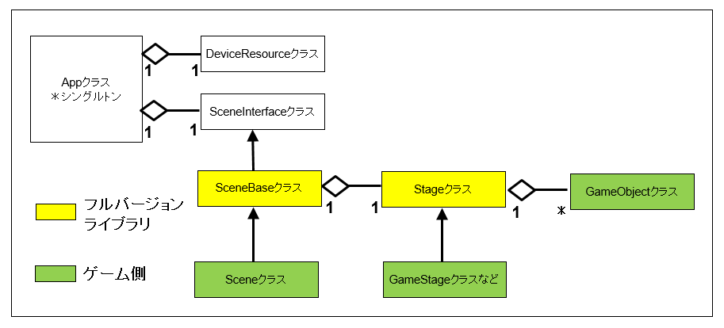
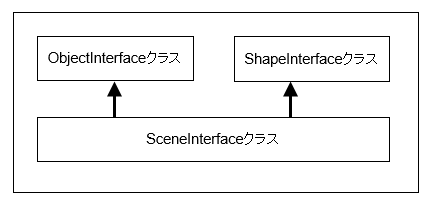

０１．BaseCross64の全体の構成
この章の目的は
BaseCross64の構造と使い方を考察、レポートするものです。
マニュアルとはちょっと違う形で考えてます。といいますのは、
BaseCross64はこれまでもそうであったように、常にライブラリが修正され、機能追加される
ゲームミドルウェアです。
そのため
マニュアルという
Fixされたものとは違い
現時点のという意味合いが強いと考えています。
ですから、このドキュメントも常に修正される可能性があるものと考えていただければと思います。
また、
すべての機能を網羅できるものではありません。中には
ほとんど実行される可能性は低いが実装されいる機能もあります。こういったものについてはこのドキュメントに記述されない場合も多々あります。
これらの
あまり使われない機能は、将来的にはライブラリから削除されるか、もしくは形を変えて再実装される可能性があります。
また、この章の内容は基本的にサンプルはありませんので、コードを確認する場合はライブラリディレクトリ内を各自参照してください。サンプルがあったほうが理解しやすいと思われる項に関しては、サンプルを用意し、その旨記述いたします。
BaseCross64の全体の構成
さて、この項のテーマは
BaseCross64の構造です。ここで
BaseCross64というのは
BaseCross64フルバージョンのことです。
BaseCross64の基本的なクラス階層は以下のようになってます。

図0001a
この階層図は、
一番ざっくりとした階層図です。
まず、BaseCross64の一番上位に位置しているクラスが
Appクラスとなります。このクラスは
シングルトンとして、
WinMain.cpp内で作成されます。
作成するには
App::CreateApp()関数を使用します。
この関数を実行した後は、ゲーム中どこからでも
App::GetApp()関数でシングルトンのインスタンスにアクセスできます。
Appクラスに含まれる
DeviceResourceクラスは
描画用のライブラリです。これは
Dx11、Dx12に対応するクラスです。ここでは詳しくは述べません。
同様に
Appクラスに含まれる
SceneInterfaceクラスは、
シーンの親クラスとなります。以下のような階層を持ってます。

図0001b
シンプルバージョンでは、この
SceneInterfaceクラスの派生クラスとして
シーンもしくは
ステージなどを作成します。その場合、必ずしも
Sceneや
Stageなどの名前も必要ではありません。
ゲーム盤を表現できるものであれば自分で決められます。
フルバージョンはいわば
ライブラリ作成の1つの形であり、その例として
SceneBaseおよび
Stageという階層を使っているというわけです。
フルバージョンに含まれるクラスは
Libsフィルタの
SharedLib内にまとめられています。また描画系のフルバージョンライブラリは、Dx11であれば
Dx11FulLibフィルタにまとめてあります。
シングルトンである
Appクラスに
1つだけ含まれるのが
SceneInterfaceクラス（のポインタ）です。フルバージョンではここに
Sceneのポインタが代入されます。
ここで
ポインタというのはすべて
スマートポインタです。
BaseCross64は
C++11のコードです。ですから
C言語由来のポインタを使うことはほとんどありません。
C言語由来のポインタの場合は
生ポインタと表現します。
このように唯一の
Appクラスに含まれる一つの
Sceneですから、当然
Sceneのインスタンスも一つになります。
Appクラスのようにシングルトンではありませんが、ほかにインスタンスを作成するメリットはありません。
SceneBaseクラスは
Sceneの親クラスです。この中に
アクティブなステージを
1つだけ含むことができます。
ステージは
Stageクラスの派生クラスとして作成します。そうすると
シーンに含めることができるようになります。
この項では、全体の構成を説明しました。次項では
Stageクラスについて説明します。